九寨沟环线方案 A3
深圳往返 · 成都租车 · 5天4晚环线 · 2026年9月14日 – 9月19日（含1天缓冲）
!置顶 · 出发前必办清单
预约购票 / 租车取还 / 航班 / 天气衣物 / 证件高反 —— 所有景区均需实名线上购票、刷身份证入园。下方打勾清单会自动保存在本机浏览器。
📅 提前办理时间轴
现在 → 出发前1个月：订机票（早班去/晚班回）、订4晚酒店、线上租车锁定价格。
出发前 1–2 周：抢九寨沟门票（旺季限流，最重要），渠道「阿坝旅游网」小程序/九寨沟官方平台。
出发前 7 天：熊猫谷预约（公众号「熊猫谷」，提前7天开放）。
出发前 5 天：三星堆预约（每日 20:00 放第5天票，手慢无）。
出发前 1–3 天：双桥沟、毕棚沟购票；查九寨沟/四姑娘山/理县天气；确认巴朗山、理小路路况。
🎫 景点预约购票（2026年旺季价）
九寨沟：普通票 280元（门票190+观光车90）；VIP套票 490元（另加VIP升级210元，每日限量）。渠道「阿坝旅游网」小程序/九寨沟官方平台，建议提前7–14天抢票。旺季（4.1–11.15）无现场售票。
三星堆博物馆：72元（学生36）。官方公众号/小程序为唯一渠道，提前5天、每晚20:00放票；8:30–18:00（17:00停止入馆）。
四姑娘山双桥沟：150元（门票80+观光车70，观光车必购）。官方渠道，提前1–3天购票。
都江堰熊猫谷：55元（优惠27）。公众号「熊猫谷」提前7天预约，按预约时段刷证入园（早间熊猫最活跃）。
毕棚沟：约130元（门票70+观光车60）。电瓶车两段往返60元自愿。美团/携程/官方提前线上购。
🚗 线上租车 · 取还车流程
预订：出发前1–2周在神州/一嗨/携程/悟空 App 预订 SUV（探岳 / CR-V / 坦克300等），取还点选双流机场，租期 9.14–9.18 共6天（含1天备用），加购不计免赔险（川西山路建议再加玻璃险）。
取车（约40分钟）：按订单指引到机场取车点 → 出示身份证+驾驶证 → 签电子合同 → 绕车一周拍视频留证（划痕/轮毂/玻璃/油表/里程全记录）→ 确认满油取车。
还车（约45分钟）：9.18 下午 15:45 前到机场还车点 → 提前加满油（满油取满油还）→ 验车 → 核对ETC/高速费 → 保留结算单。
注意：违章押金一般1–2周退还；取车后先熟悉车况（刹车/灯光/雨刮）再上高速。
✈️ 航班（深圳 ⇄ 成都）
去程 9.14（周一）早班：订 07:00–08:30 起飞的航班（参考南航 CZ5861 07:00 到双流），落地约 09:30–11:00，直飞约2.5h，参考价 500–1,100元/人。
返程 9.18（周五）晚班：订 19:30 之后起飞的航班，约 22:00 落地深圳，参考价 600–1,300元/人。
购票时机：提前2–4周购票锁定低价；9月非节假日，早晚班常有折扣舱位。
值机：国内航班提前2小时到机场——去程 06:00 前到宝安、返程 16:30 前到双流。
机场：优先双流进出（去九寨沟方向更顺路）；若飞天府，去程多约40km/1h，返程需预留更多时间。
🧥 天气与衣物（9月中旬）
天气：高原白天 10–20°C、夜间 5–10°C（四姑娘山可低至0–5°C），昼夜温差 10°C+；9月仍处雨季尾声，山区小气候多变、可能遇雨雪雾。
外套：冲锋衣/软壳（防风防雨）+ 轻薄羽绒或抓绒内胆（早晚叠穿）。
内搭：速干长袖2–3件、长裤2条（含防风裤）、保暖袜、薄手套+毛线帽（清晨沟内很冷）。
鞋：防水防滑徒步鞋（九寨沟、双桥沟大量栈道徒步）。
防晒防雨：SPF50+防晒霜、墨镜、遮阳帽 + 一次性雨衣。
路况：出发前3天查九寨沟、四姑娘山、理县天气；如遇强降温/大雪，巴朗山、理小路可能交通管制，备选改走高速绕行。
🆔 证件 · 高反 · 氧气
证件：全员身份证（所有景区刷证入园）、司机驾驶证（租车必需）。
高反：行程最高约3,850m（理小路垭口），四姑娘山住宿约3,200m——出发前3–5天开始服红景天；抵高海拔当晚不洗澡、不饮酒、慢行动。
氧气瓶：本路线需要储备便携氧气瓶，详见下方「海拔与氧气」章节。当地药店/酒店约30元/罐。
药品：感冒药、肠胃药、晕车药、布洛芬（应对高反头痛）、创可贴。
随身：充电宝、保温杯、少量现金（山区信号弱，小店可能只收现金）、零食干粮（沟内午餐可自备）。
1环线总览
大九寨环线 · 深圳进出 · 双流取还车 · 高德地图驾车规划（2026-08-14 实测）
| 日期 | 行程 | 自驾 | 过路费 | 住宿 |
|---|---|---|---|---|
| Day1 9.14 周一 | 深圳 ✈ 成都 → 三星堆 → 九寨沟口 | 465 km · 约6h | 258 元 | 九寨沟沟口（漳扎镇） |
| Day2 9.15 周二 | 九寨沟一日游（Y字形）→ 松潘古城 | 105 km · 约2.2h | 0 元 | 松潘古城（海拔约2,850m） |
| Day3 9.16 周三 | 松潘 → 叠溪海子 → 茂县 → 毕棚沟 → 理小路 → 四姑娘山 | 490 km · 约10h | 18 元 | 四姑娘山镇（海拔约3,200m） |
| Day4 9.17 周四 | 四姑娘山双桥沟 → 猫鼻梁观景台 → 都江堰 | 157 km · 约3.2h | 17 元 | 都江堰城区 |
| Day5 9.18 周五 | 熊猫谷 → 成都时代广场（春熙路）→ 双流机场 ✈ 深圳 | 104 km · 约2h | 26 元 | 当晚飞回深圳 |
| Day6 9.19 周六 | 缓冲日：凌晨抵深休整（若航班延误或想多待一晚可改签） | — | ||
🗺 全线自驾路线图（默认显示 · 九寨沟自驾路线A）
↗ 打开高德互动地图（含各景点标记） 🖼 查看静态环线图 标记点：双流机场 · 三星堆 · 九寨沟 · 松潘古城 · 叠溪海子 · 茂县 · 毕棚沟 · 理小路红石滩 · 四姑娘山 · 双桥沟 · 猫鼻梁 · 都江堰 · 熊猫谷 · 时代广场
🧭 途经景点 / 地点一览
DAY9.14 周一
深圳 ✈ 成都 → 三星堆 → 九寨沟口
自驾 465 km · 约6h · 过路费 258 元 · 宿九寨沟沟口（漳扎镇）
▼
🗓 时间安排（含游玩时长、休息与吃饭）
| 时间 | 类型 | 安排 |
|---|---|---|
| 06:30 | ✈ 乘机 | 到达深圳宝安机场（早班机，参考南航 CZ5861 07:00 直飞双流） |
| 09:30 | ✈ 落地 | 落地成都双流机场 → 线上预约的租车平台取车（验车、拍照留档，约40分钟） |
| 10:20 | 🚗 驾车 | 出发 → 三星堆（81km/约1.1h，成都二绕/京昆高速） |
| 11:30–14:00 | 🏞 游玩2.5h | 三星堆博物馆（门票72元，含陈列馆/修复馆；提前5天官方公众号预约） |
| 12:00–13:00 | 🍜 午饭 | 广汉市区或博物馆园区餐厅，顺带休息（推荐广汉缠丝兔、连山回锅肉） |
| 14:00 | 🚗 驾车 | 出发 → 九寨沟口（384km/约4.9h，京昆高速 → 绵阳 → 九绵高速，路平好开） |
| 16:30–16:50 | ☕ 休息 | 平武服务区休整20分钟，换驾驶员、加油（后半程加油站少，建议加满） |
| 19:30 | 🏨 入住 | 抵达九寨沟沟口（漳扎镇），办理入住 |
| 20:00–21:00 | 🍜 晚饭 | 沟口美食街：牦牛肉汤锅 / 藏式土火锅 |
| 21:30 | 😴 休息 | 早睡，为第二天九寨沟全天徒步养精蓄锐 |
🏨 住宿推荐高德POI · 沟口步行可达
🔍 高德搜索沟口周边更多酒店9月中旬房价约300–400元/间，建议提前在携程/飞猪预订。
DAY9.15 周二
九寨沟一日游（Y字形）→ 松潘古城
自驾 105 km · 约2.2h · 无过路费 · 宿松潘古城（海拔约2,850m）
▼
🗓 时间安排
| 时间 | 类型 | 安排 |
|---|---|---|
| 07:00–07:30 | 🍜 早餐 | 酒店早餐，步行至游客中心 |
| 07:30 | 🏞 入园 | 刷身份证入园（门票190+观光车90=280元，提前实名预约）。观光车在诺日朗分叉，若调度先去左支则反向玩 |
| 07:30–12:00 | 🏞 游玩4.5h | Y字右支：原始森林 → 箭竹海 → 熊猫海 → 五花海（必打卡·九寨一绝）→ 珍珠滩（86版西游记片尾取景） |
| 12:00–13:00 | 🍜 午饭+休息 | 诺日朗中心站餐厅（套餐/自助），或自备干粮，坐观光车途中休息 |
| 13:00–17:00 | 🏞 游玩4h | Y字左支：长海（海拔约3,100m，九寨最大海子）→ 五彩池（九寨精华·最小而最艳）→ 返回诺日朗瀑布（宽270m） |
| 17:00 | 🚗 出发 | 出园取车 → 松潘古城（105km/2.2h，G544国道经川主寺，日落前出发避免夜路） |
| 19:30 | 🏨 入住 | 抵达松潘古城，办理入住（海拔2,850m，动作放缓防高反） |
| 20:00–21:00 | 🍜 晚饭 | 古城内：牦牛肉汤锅 / 酥油茶，饭后逛古城夜景 |
🗺 路线地图
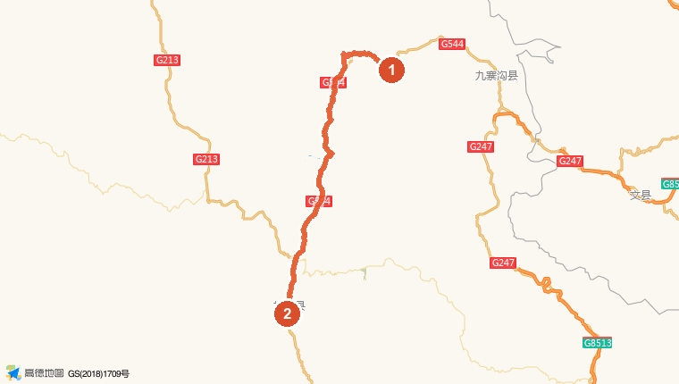
📸 九寨沟游玩攻略图
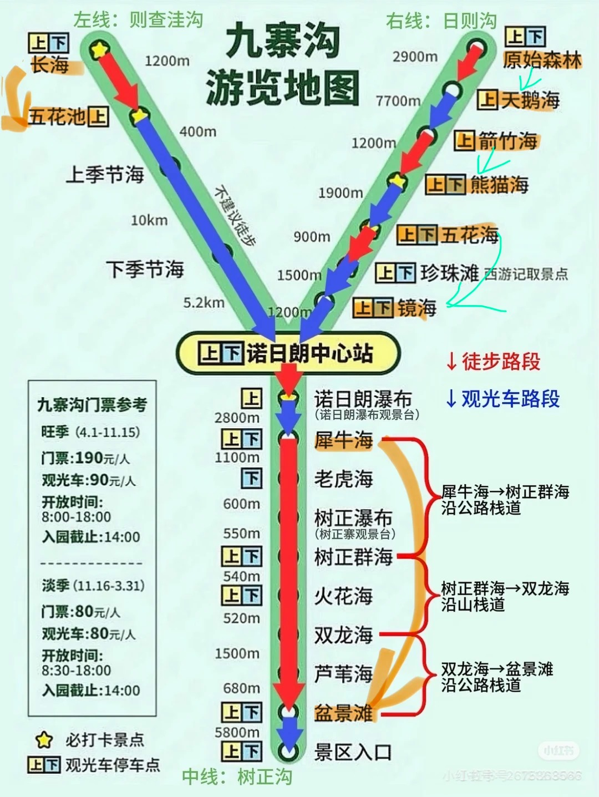
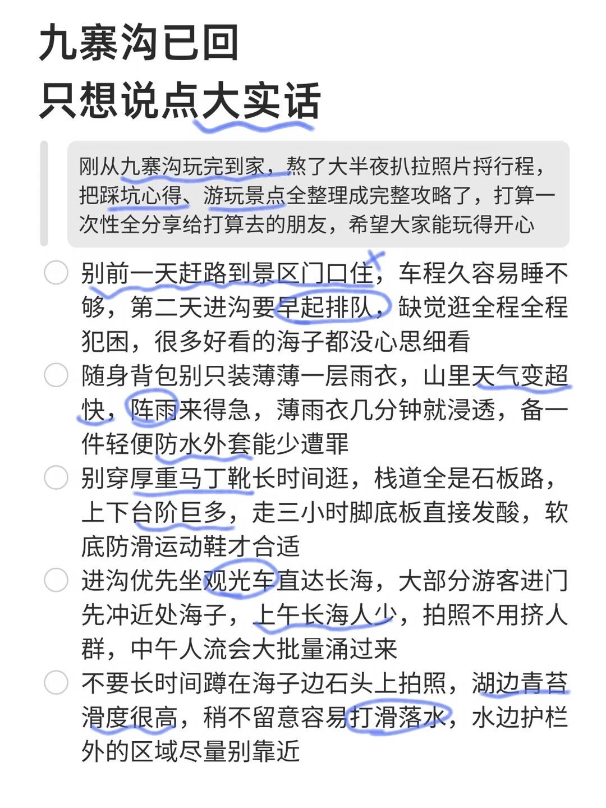
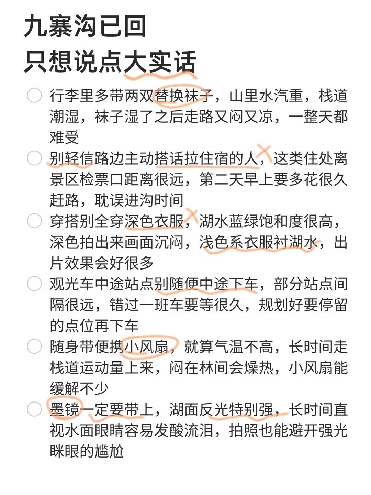
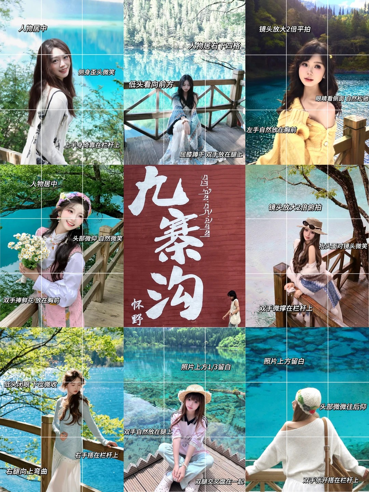
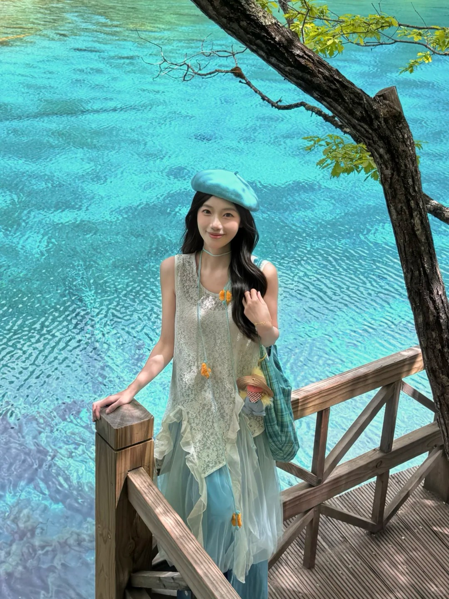

🏨 住宿推荐高德POI · 古城内
DAY9.16 周三
松潘 → 茂县 → 毕棚沟 → 理小路 → 四姑娘山
自驾 490 km · 约10h · 过路费 18 元 · 宿四姑娘山镇（海拔约3,200m）
▼
🗓 时间安排
| 时间 | 类型 | 安排 |
|---|---|---|
| 07:30–08:00 | 🍜 早餐 | 松潘古城早餐 |
| 08:00 | 🚗 驾车 | 出发 → 茂县方向（约85km/2h，G213沿岷江峡谷，途经山崖陡峭、云雾缭绕路段） |
| 10:00–10:20 | ☕ 休息+拍照 | 叠溪海子观景台停靠20分钟（1933年地震堰塞湖，湖面海拔2,258m，湖水湛蓝） |
| 10:20 | 🚗 驾车 | 继续 → 茂县县城（约55km/1h） |
| 11:20–12:00 | 🍜 午饭+休息 | 茂县县城午饭（羌族风味：羌家土火锅、咂酒；或简餐赶路） |
| 12:00 | 🚗 驾车 | 出发 → 毕棚沟（约115km/2h，经汶川、理县） |
| 14:00–17:30 | 🏞 游玩3.5h | 毕棚沟（门票70+观光车60≈130元；电瓶车两段往返60元自愿）：观光车 → 上海子 → 磐羊湖 → 燕子岩窝（海拔约3,800m，慢行防高反） |
| 17:30 | 🚗 驾车 | 出发 → 理小路（草原、森林、峡谷、雪山层层变换，一步一景） |
| 18:30–19:00 | 📸 拍照30min | 理小路红石滩停靠：雪山+红石滩，傍晚光线绝佳（约3,800m） |
| 19:00 | 🚗 驾车 | 理小路 → 四姑娘山镇（约110km/2.5h，翻垭口最高约3,850m，盘山路慢开） |
| 21:30 | 🏨 入住 | 抵达四姑娘山镇，办理入住 |
| 22:00 | 🍜 晚饭 | 镇上川菜馆 / 藏餐，饭后早休息（海拔3,200m，当晚不洗澡防高反） |
🗺 路线地图
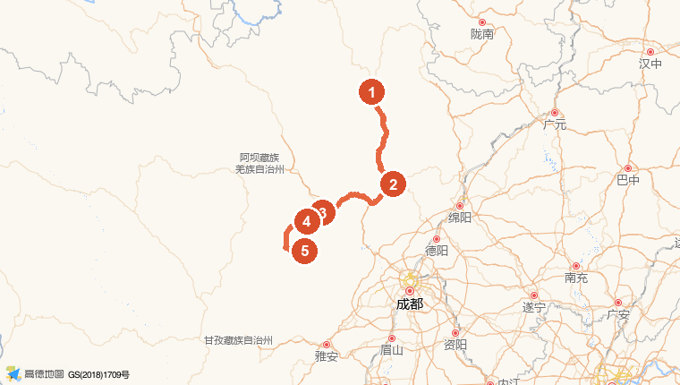
🎬 沿途风景视频（自动循环播放）
📸 沿途风景
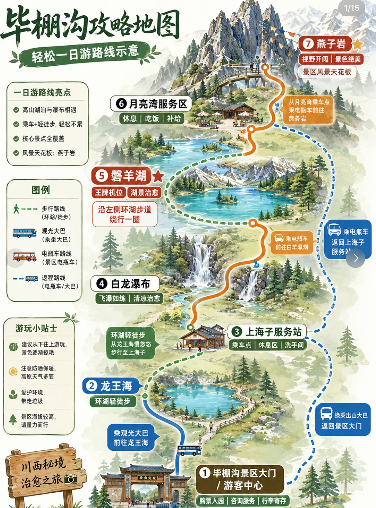
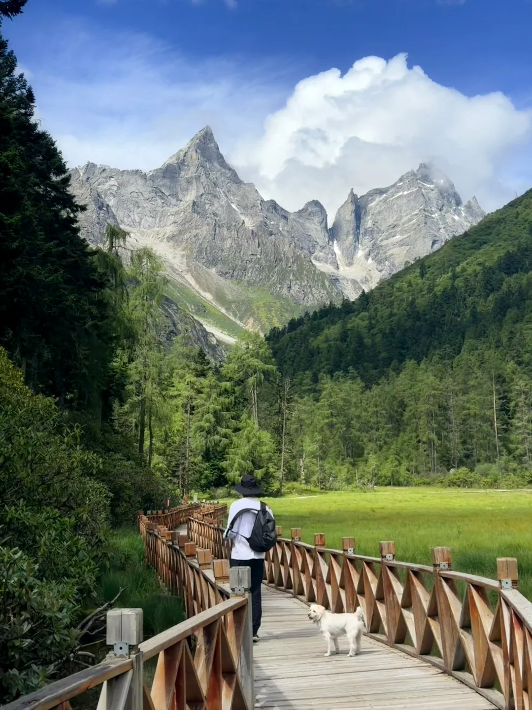
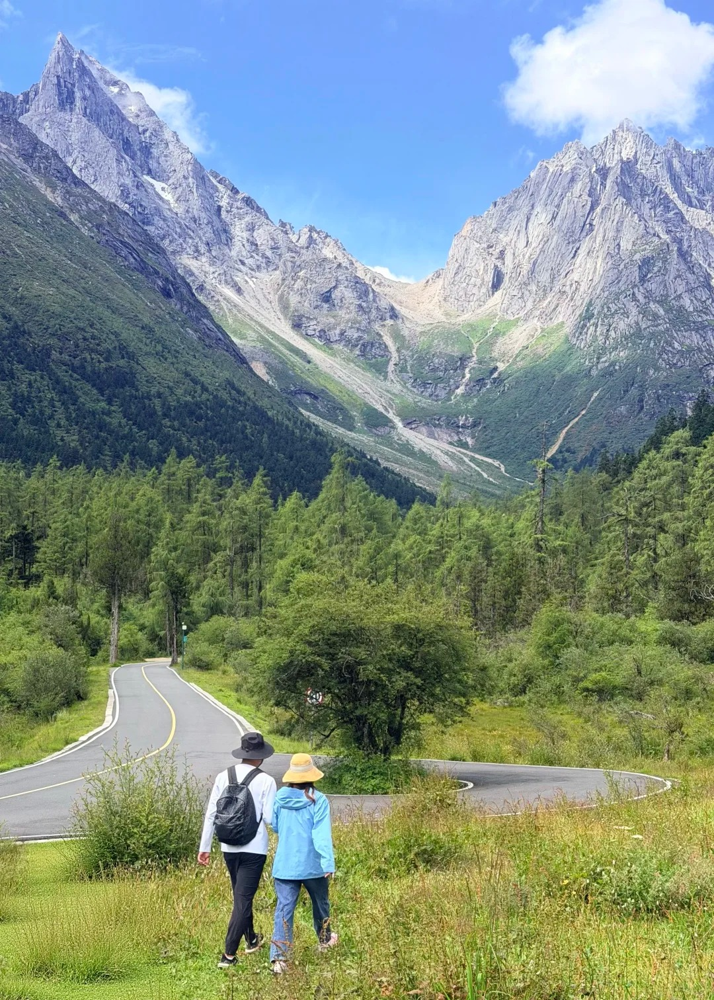
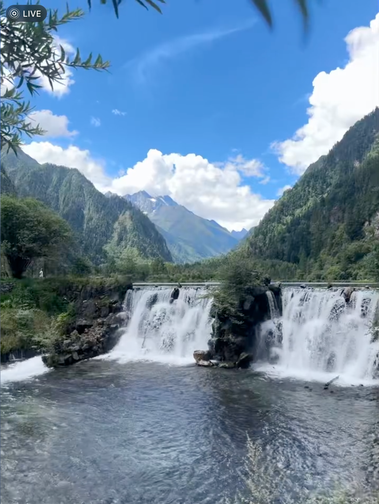
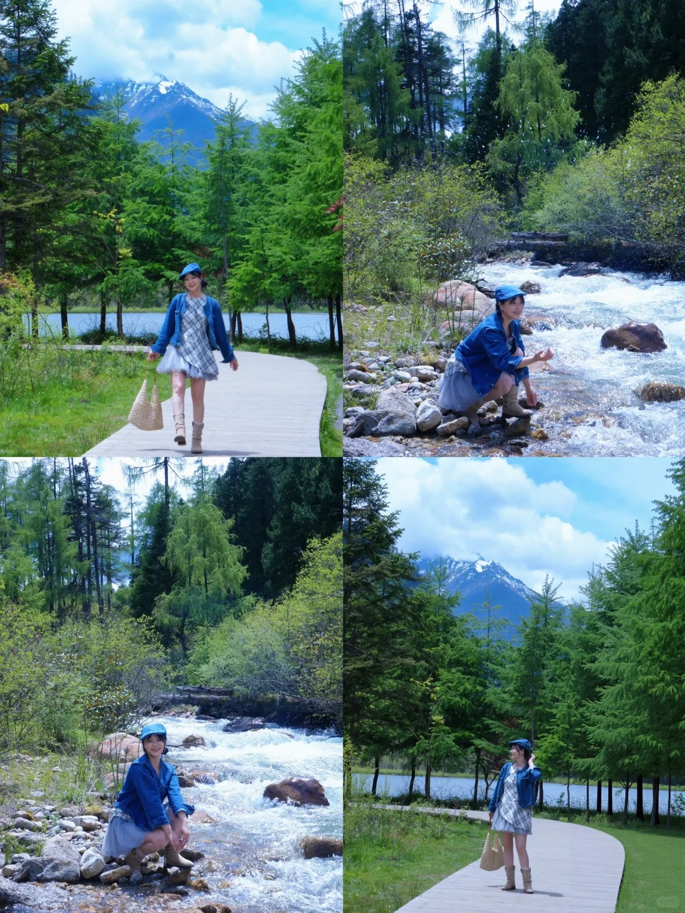
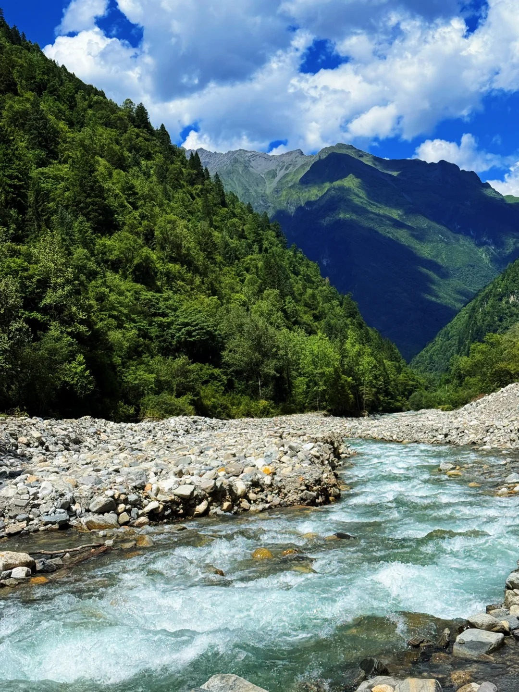
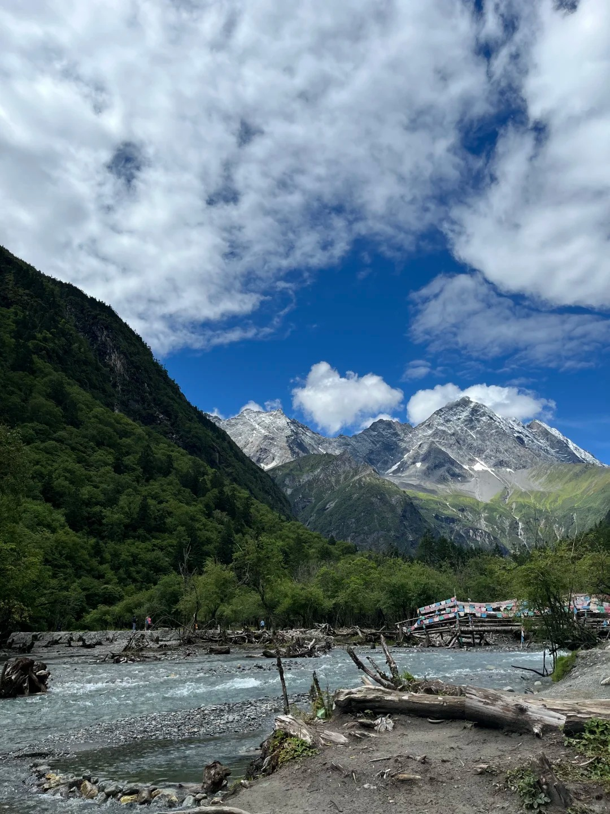
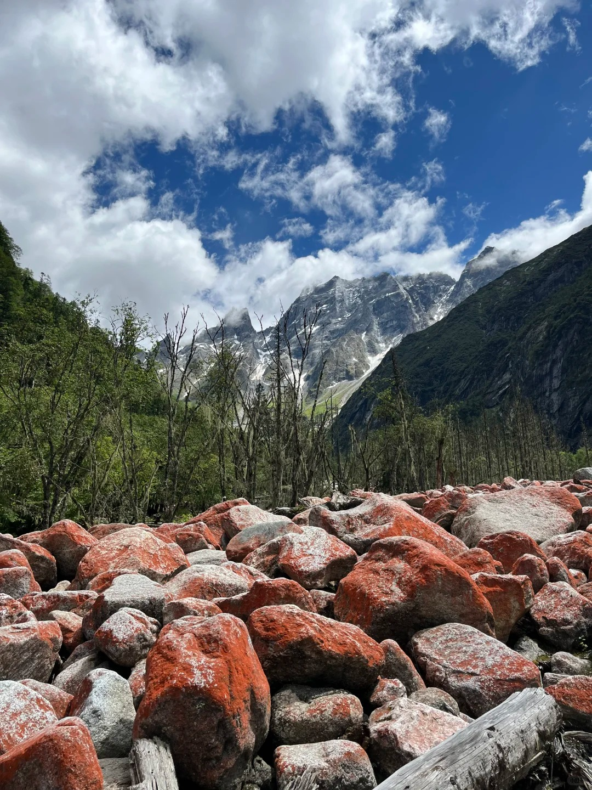
🏨 住宿推荐高德POI · 四姑娘山镇
🔍 高德搜索四姑娘山镇周边更多酒店镇上酒店密集，9月中旬约250–350元/间；高反明显的队友可让酒店备氧气瓶（约30元/罐）。
DAY9.17 周四
四姑娘山双桥沟 → 猫鼻梁观景台 → 都江堰
自驾 157 km · 约3.2h · 过路费 17 元 · 宿都江堰
▼
🗓 时间安排
| 时间 | 类型 | 安排 |
|---|---|---|
| 07:30–08:00 | 🍜 早餐 | 镇上早餐 |
| 08:00 | 🚗 驾车 | 出发 → 双桥沟口（约7km/10min） |
| 08:30–13:00 | 🏞 游玩4.5h | 双桥沟（门票80+观光车70=150元，需实名预约）：观光车直达红杉林（约3,800m）后一站站往下玩：红杉林 → 牛棚子 → 碾鱼坝 → 四姑娜措 → 隆珠措 → 人参果坪（雪山、海子、草甸） |
| 13:00–13:40 | 🍜 午饭+休息 | 沟内隆珠措服务站简餐 / 自备干粮，或回镇上吃 |
| 13:40 | 🚗 驾车 | 出发 → 猫鼻梁观景台（约8km/15min） |
| 14:00–14:40 | 📸 观景40min | 猫鼻梁观景台：远眺四姑娘山幺妹峰及四姐妹全貌（海拔约3,500m，免费），天气晴好时雪山一览无余 |
| 14:40 | 🚗 驾车 | 出发 → 都江堰（约149km/3.2h，巴朗山隧道 → 卧龙 → 映秀 → 都汶高速） |
| 16:30–16:50 | ☕ 休息 | 卧龙服务区休整20分钟，换驾驶员（卧龙附近常有野生熊猫走廊，注意限速） |
| 18:30 | 🏨 入住 | 抵达都江堰城区，办理入住 |
| 19:00–21:00 | 🍜 晚饭+夜游 | 灌县古城：南桥夜景（免费）→ 夜啤酒长廊，尤兔头 / 青城四绝 |
🗺 路线地图
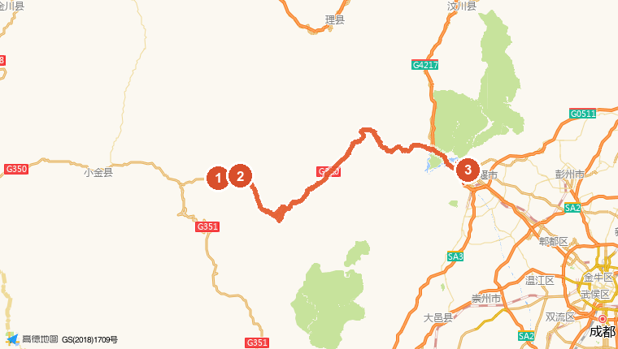
🎬 风景视频（自动循环播放）
📸 风景


🏨 住宿推荐高德POI · 南桥附近
DAY9.18 周五
熊猫谷 → 成都时代广场（春熙路）→ 双流机场 ✈ 深圳
自驾 104 km · 约2h · 过路费 26 元 · 当晚飞回深圳
▼
🗓 时间安排
| 时间 | 类型 | 安排 |
|---|---|---|
| 07:30–08:00 | 🍜 早餐 | 酒店早餐 |
| 08:00 | 🚗 驾车 | 出发 → 熊猫谷（6km/15min，环山旅游路玉堂段408号） |
| 08:15–11:00 | 🏞 游玩2.5h | 都江堰熊猫谷（门票55元，公众号「熊猫谷」提前7天预约）：早间熊猫最活跃，园区依山而建、人少清静，可近距离看大熊猫与小熊猫 |
| 11:00 | 🚗 驾车 | 出发 → 成都市区（55km/1h，成灌高速 → 绕城） |
| 12:00–13:30 | 🍜 午饭 | 时代广场（总府路2号，春熙路地铁D口步行270米）：商场内火锅 / 川菜 |
| 13:30–15:00 | 🛍 逛街1.5h | 春熙路步行街 → IFS「熊猫屁股」打卡 → 太古里（从时代广场步行即达） |
| 15:00 | 🚗 驾车 | 出发 → 双流机场（20km/40min） |
| 15:45–16:30 | 🚗 还车 | 机场还车点验车还车（预留45分钟），随后值机托运 |
| 17:30–18:30 | 🍜 晚饭 | 机场晚餐、休息 |
| 19:30 | ✈ 起飞 | 晚班机 → 深圳（直飞约2.5h，约22:00落地宝安） |
🗺 路线地图
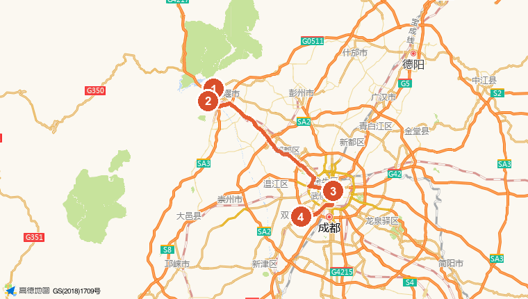
📸 风景


{kind=link}
{kind=link}
{kind=link}
{kind=link}
{kind=link}
{kind=link}
{kind=link}
{kind=link}
{kind=link}
{kind=link}
{kind=link}
{kind=link}
{kind=link}
{kind=link}
{kind=link}
{kind=link}
{kind=link}
¥费用预算（4人 · 人均）
门票为2026年旺季价；里程/时长/过路费由高德驾车规划接口计算（2026-08-14 调用）
🎫 门票（2026年9月旺季价）
| 景区 | 价格 | 明细 |
|---|---|---|
| 九寨沟 | 280 元（VIP 490 元） | 门票190 + 观光车90；VIP另加升级210元 |
| 三星堆 | 72 元 | 含陈列馆/修复馆，学生36元 |
| 毕棚沟 | 约130 元 | 门票70 + 观光车60；电瓶车两段往返60元自愿 |
| 四姑娘山双桥沟 | 150 元 | 门票80 + 观光车70（观光车必购） |
| 都江堰熊猫谷 | 55 元 | 优惠票27元 |
| 合计 | 687 元/人 | 选VIP为 897 元/人；都江堰景区80元为备选 |
💰 人均明细
| 项目 | 明细 | 人均（元） |
|---|---|---|
| ✈ 机票 | 深圳⇄成都往返（提前2–4周购票，早班去/晚班回） | 约 1,100 – 2,400 |
| 🚗 租车 | SUV 6天（含基础保险与服务费，如探岳/CR-V/坦克300），按约3,000元/车计 | 约 575 – 850 |
| ⛽ 油费 | 约1,321km × 8.5L/100km × 8.06元/L（四川92号）≈ 905元/车 | 约 226 |
| 🛣 过路费 | 高德规划合计约319元/车（Day1 258 + Day3 18 + Day4 17 + Day5 26） | 约 80 |
| 🎫 门票 | 九寨沟280 + 三星堆72 + 毕棚沟130 + 双桥沟150 + 熊猫谷55 | 687（VIP 897） |
| 🏨 住宿 | 4晚 × 2间（九寨沟口/松潘/四姑娘山/都江堰，约250–350元/间·晚） | 约 500 – 700 |
| 🍜 餐饮 | 6天 × 约100元/人·天 | 约 600 |
| 人均合计（不含机票） | 约 2,650 – 3,150 元 | |
| 人均合计（含机票） | 约 4,300 – 5,500 元（按往返机票1,100–2,400元计；若选九寨沟VIP另加210元） | |
价格说明：门票/租车/油价为2026年8月网络可查价格（旺季价），机票为动态价格以购票平台实时价为准；毕棚沟套票、电瓶车等以景区当日公示为准。
⛰路线海拔与氧气储备
结论：需要储备便携氧气瓶。本环线最高约3,850m（理小路垭口）、住宿最高约3,200m（四姑娘山镇），且Day3–Day4连续在高海拔活动。
| 地点 | 海拔 | 备注 |
|---|---|---|
| 成都 / 三星堆 | 约 500m | 平原，无高反风险 |
| 九寨沟沟口 | 约 2,000m | 景区大门附近，多数人无感 |
| 九寨沟长海 | 约 3,100m 中海拔 | 景区游客可达最高点，慢行 |
| 松潘古城 | 约 2,850m 中海拔 | 第一晚高原住宿，当晚不洗澡不饮酒 |
| 叠溪海子观景台 | 约 2,258m | 途经停靠20分钟 |
| 茂县县城 | 约 1,580m | 午饭点，海拔回落 |
| 毕棚沟燕子岩窝 | 约 3,800m 高海拔 | 景区最高点，慢行防高反 |
| 理小路垭口（红石滩一带） | 约 3,850m 全环线最高 | 隧道西口，短暂停留不剧烈活动 |
| 四姑娘山镇 | 约 3,200m 高海拔住宿 | 住宿最高点，当晚不洗澡、不饮酒 |
| 双桥沟红杉林 | 约 3,800m 高海拔 | 观光车直达，游玩约1小时 |
| 猫鼻梁观景台 | 约 3,500m 中海拔 | 停靠40分钟 |
| 都江堰 / 熊猫谷 | 约 700–800m | 海拔基本回落 |